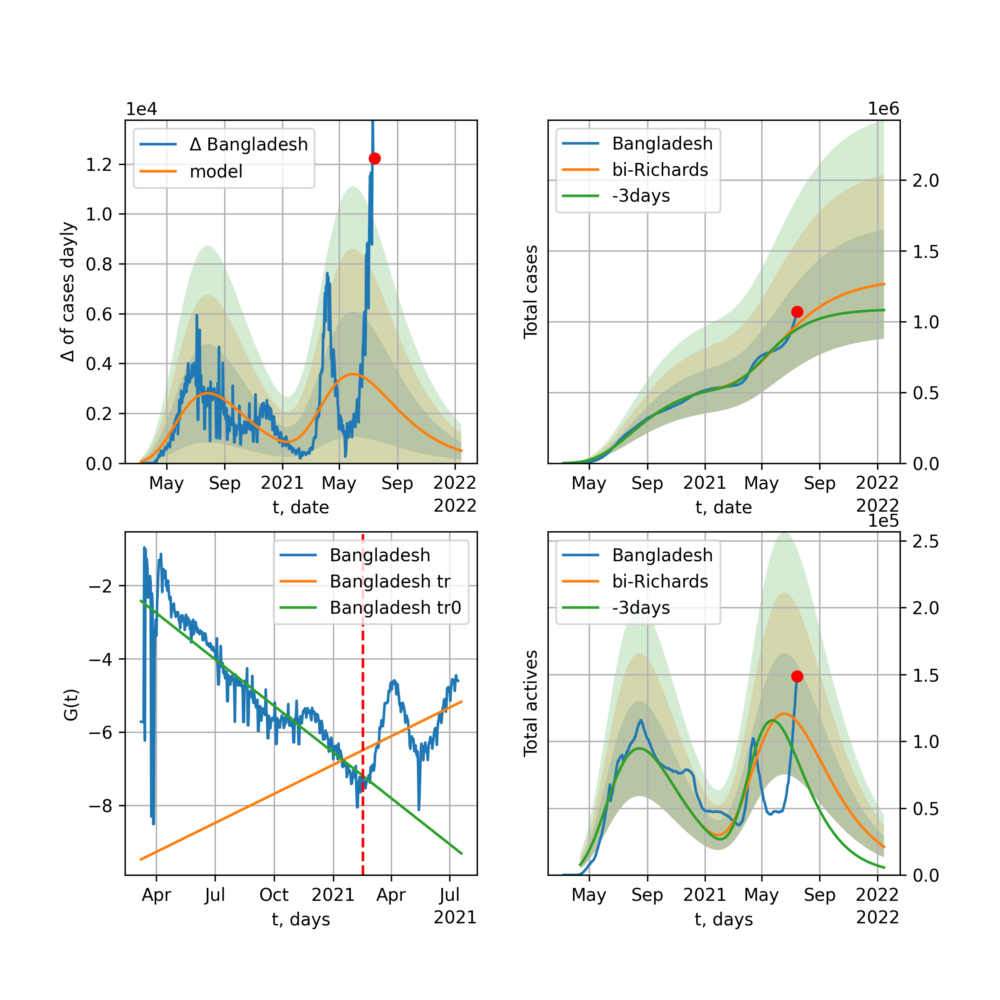

Multi-logistic model of COVID-19 dynamics
Model, code, results
Project maintained by algmaknick Hosted on GitHub Pages — Theme by mattgraham
World

World data at: 2020-05-29
+3 day model MAPE: 0.020002
model: bi-Richards
coeffs: [ 8.11502351e+06 3.46399308e+00 -5.97956056e+01 9.05859419e-03]
S.Korea scenario coeffs: [0.36242246, 2.56241634, 1.84890887, 0.13324732]
rational stdev: 0.250500
forecast at the end of period: +478 days
deltaDaycases: 8697
total cases: 10391198 ± 2602997
total death: 631844 ± 474831
bi-Richards approximation splitting point: 55
trend coefficient of determination: 0.356110
intercept: -1.894926
slope: -0.041411
trend coefficient of determination: 0.908263
intercept: -0.804626
slope: -0.028968
European Union

European Union data at: 2020-05-29
+3 day model MAPE: 0.007913
model: logisticQ
coeffs: [ 1.14488624e+06 4.78605815e-07 3.50988177e+01 -2.18351071e+05]
S.Korea scenario coeffs: [0.35416971, 0.02606324, 4.35859408, 19.30413219]
rational stdev: 0.343457
forecast at the end of period: +148 days
deltaDaycases: 285
total cases: 1545009 ± 530644
total death: 162646 ± 167585
trend coefficient of determination: 0.989484
intercept_: -7.792974215352789
coeffs_: [ 0. -0.27022049 0.00157746]
USA

USA data at: 2020-05-29
+3 day model MAPE: 0.010706
model: Richards
coeffs: [ 2.08742133e+06 3.60427707e+00 -5.98121839e+01 1.20853022e-02]
S.Korea scenario coeffs: [0.36242246, 2.56241634, 1.84890887, 0.13324732]
rational stdev: 0.352030
forecast at the end of period: +470 days
deltaDaycases: 362
total cases: 2819317 ± 992484
total death: 164333 ± 173550
trend coefficient of determination: 0.953814
intercept: -1.079161
slope: -0.043816
Spain

Spain data at: 2020-05-29
+3 day model MAPE: 0.002079
model: Richards
coeffs: [ 2.92037162e+05 9.17448852e+00 -5.26334926e+01 6.69897367e-03]
S.Korea scenario coeffs: [0.36242246, 2.56241634, 1.84890887, 0.13324732]
rational stdev: 0.238844
forecast at the end of period: +288 days
deltaDaycases: 122
total cases: 391917 ± 93607
total death: 37211 ± 26662
trend coefficient of determination: 0.955203
intercept: -0.724230
slope: -0.060327
Italy

Italy data at: 2020-05-29
+3 day model MAPE: 0.001102
model: Richards
coeffs: [ 2.36550153e+05 6.09872054e+00 -5.14991088e+01 9.78771803e-03]
S.Korea scenario coeffs: [0.36242246, 2.56241634, 1.84890887, 0.13324732]
rational stdev: 0.070794
forecast at the end of period: +260 days
deltaDaycases: 147
total cases: 314783 ± 22284
total death: 45037 ± 9565
trend coefficient of determination: 0.985095
intercept: -1.094388
slope: -0.056780
United Kingdom

United Kingdom data at: 2020-05-29
+3 day model MAPE: 0.002529
model: Richards
coeffs: [ 3.14550393e+05 3.65466782e+00 -5.95507107e+01 1.28494345e-02]
S.Korea scenario coeffs: [0.36242246, 2.56241634, 1.84890887, 0.13324732]
rational stdev: 0.135783
forecast at the end of period: +358 days
deltaDaycases: 166
total cases: 417738 ± 56721
total death: 58775 ± 23941
trend coefficient of determination: 0.959781
intercept: -1.393115
slope: -0.045586
France

France data at: 2020-05-29
+3 day model MAPE: 0.003699
model: Richards
coeffs: [1.81864586e+05 4.74040934e-01 1.39905379e+01 1.98011324e-01]
S.Korea scenario coeffs: [0.36242246, 2.56241634, 1.84890887, 0.13324732]
rational stdev: 0.834607
forecast at the end of period: +120 days
deltaDaycases: 217
total cases: 240675 ± 200869
total death: 36988 ± 92611
trend coefficient of determination: 0.901681
intercept: -2.062499
slope: -0.076992
Germany

Germany data at: 2020-05-29
+3 day model MAPE: 0.004074
model: Richards
coeffs: [ 1.79804393e+05 1.06543588e+01 -4.44084231e+01 7.48408659e-03]
S.Korea scenario coeffs: [0.36242246, 2.56241634, 1.84890887, 0.13324732]
rational stdev: 0.377208
forecast at the end of period: +190 days
deltaDaycases: 124
total cases: 240278 ± 90634
total death: 11282 ± 12766
trend coefficient of determination: 0.951656
intercept: -1.251371
slope: -0.063830
Turkey

Turkey data at: 2020-05-29
+3 day model MAPE: 0.007272
model: Richards
coeffs: [ 1.64488707e+05 7.77033389e+00 -4.12835287e+01 8.98786194e-03]
S.Korea scenario coeffs: [0.36242246, 2.56241634, 1.84890887, 0.13324732]
rational stdev: 0.254383
forecast at the end of period: +196 days
deltaDaycases: 259
total cases: 212002 ± 53929
total death: 5870 ± 4479
trend coefficient of determination: 0.799036
intercept: -0.998317
slope: -0.056578
Russia

Russia data at: 2020-05-29
+3 day model MAPE: 0.007028
model: Richards
coeffs: [5.26911244e+05 1.96324335e-01 2.59895818e+01 3.18967233e-01]
S.Korea scenario coeffs: [0.36242246, 2.56241634, 1.84890887, 0.13324732]
rational stdev: 0.146531
forecast at the end of period: +218 days
deltaDaycases: 572
total cases: 688902 ± 100945
total death: 7773 ± 3416
trend coefficient of determination: 0.987643
intercept: -3.640628
slope: -0.065058
Iran

Iran data at: 2020-05-29
+3 day model MAPE: 0.005578
model: bi-Richards
coeffs: [7.92306394e+04 4.06143390e+00 2.74903394e+01 1.74737873e-02]
S.Korea scenario coeffs: [0.36242246, 2.56241634, 1.84890887, 0.13324732]
rational stdev: 0.298173
forecast at the end of period: +302 days
deltaDaycases: 66
total cases: 207559 ± 61888
total death: 10864 ± 9718
bi-Richards approximation splitting point: 75
trend coefficient of determination: 0.949228
intercept: -0.951172
slope: -0.055706
trend coefficient of determination: 0.071846
intercept: -4.748200
slope: 0.004424
Brazil

Brazil data at: 2020-05-29
+3 day model MAPE: 0.014023
model: logisticQ
coeffs: [ 1.12364335e+06 7.16912287e-06 8.48991957e+01 -1.03857882e+04]
S.Korea scenario coeffs: [0.35416971, 0.02606324, 4.35859408, 19.30413219]
rational stdev: 0.393047
forecast at the end of period: +428 days
deltaDaycases: 84
total cases: 1519379 ± 597187
total death: 90655 ± 106895
trend coefficient of determination: 0.893862
intercept_: -4.350066240700284
coeffs_: [ 0. -0.26479112 0.00157051]

Brazil data at: 2020-05-29
+3 day model MAPE: 0.001853
model: Richards
coeffs: [1.07242352e+07 1.75103264e-01 2.39979990e+01 1.04199523e-01]
S.Korea scenario coeffs: [0.36242246, 2.56241634, 1.84890887, 0.13324732]
rational stdev: 0.342960
forecast at the end of period: +1058 days
deltaDaycases: 1815
total cases: 14308047 ± 4907082
total death: 853708 ± 878362
trend coefficient of determination: 0.199277
intercept: -2.609280
slope: -0.022865
Canada

Canada data at: 2020-05-29
+3 day model MAPE: 0.003478
model: Richards
coeffs: [ 1.08788261e+05 3.24562077e+00 -7.02975879e+01 1.31817604e-02]
S.Korea scenario coeffs: [0.36242246, 2.56241634, 1.84890887, 0.13324732]
rational stdev: 0.175591
forecast at the end of period: +420 days
deltaDaycases: 37
total cases: 145609 ± 25567
total death: 11364 ± 5986
trend coefficient of determination: 0.961980
intercept: -1.576355
slope: -0.044372
Belgium

Belgium data at: 2020-05-29
+3 day model MAPE: 0.002639
model: Richards
coeffs: [ 5.90887836e+04 4.19927735e+00 -3.66526386e+01 1.62624493e-02]
S.Korea scenario coeffs: [0.36242246, 2.56241634, 1.84890887, 0.13324732]
rational stdev: 0.885869
forecast at the end of period: +190 days
deltaDaycases: 79
total cases: 76755 ± 67995
total death: 12466 ± 33129
trend coefficient of determination: 0.946993
intercept: -1.245553
slope: -0.058602
Peru

Peru data at: 2020-05-29
+3 day model MAPE: 0.028093
model: Richards
coeffs: [ 4.53639776e+05 1.12811421e+00 -5.33138547e+01 2.45611507e-02]
S.Korea scenario coeffs: [0.36242246, 2.56241634, 1.84890887, 0.13324732]
rational stdev: 0.219603
forecast at the end of period: +498 days
deltaDaycases: 486
total cases: 550267 ± 120840
total death: 15697 ± 10341
trend coefficient of determination: 0.661059
intercept: -1.551486
slope: -0.027330
Netherlands

Netherlands data at: 2020-05-29
+3 day model MAPE: 0.003000
model: Richards
coeffs: [ 4.65891386e+04 6.27482169e-01 -2.67390015e+00 1.12775707e-01]
S.Korea scenario coeffs: [0.36242246, 2.56241634, 1.84890887, 0.13324732]
rational stdev: 0.121583
forecast at the end of period: +190 days
deltaDaycases: 31
total cases: 62135 ± 7554
total death: 7989 ± 2913
trend coefficient of determination: 0.970004
intercept: -1.526303
slope: -0.066475
India

India data at: 2020-05-29
+3 day model MAPE: 0.004946
model: Richards
coeffs: [ 2.91732604e+06 4.00579654e-01 -4.53187438e+01 4.10764638e-02]
S.Korea scenario coeffs: [0.36242246, 2.56241634, 1.84890887, 0.13324732]
rational stdev: 0.373210
forecast at the end of period: +1058 days
deltaDaycases: 929
total cases: 3792883 ± 1415540
total death: 108702 ± 121705
trend coefficient of determination: 0.580665
intercept: -1.805059
slope: -0.021811
Switzerland

Switzerland data at: 2020-05-29
+3 day model MAPE: 0.001995
model: logisticQ
coeffs: [ 3.01220727e+04 7.05538724e-07 2.60254057e+01 -2.02956042e+05]
S.Korea scenario coeffs: [0.35416971, 0.02606324, 4.35859408, 19.30413219]
rational stdev: 0.335024
forecast at the end of period: +78 days
deltaDaycases: 19
total cases: 40518 ± 13574
total death: 2522 ± 2534
trend coefficient of determination: 0.982456
intercept_: -3.9832861176197554
coeffs_: [ 0. -0.30059163 0.0016809 ]
Ecuador

Ecuador data at: 2020-05-29
+3 day model MAPE: 0.010908
model: Richards
coeffs: [ 5.83482416e+04 1.28436504e+00 -5.40487177e+01 2.62071398e-02]
S.Korea scenario coeffs: [0.36242246, 2.56241634, 1.84890887, 0.13324732]
rational stdev: 0.364006
forecast at the end of period: +638 days
deltaDaycases: 5
total cases: 79011 ± 28760
total death: 6829 ± 7457
trend coefficient of determination: 0.149344
intercept: -2.363912
slope: -0.030443
Portugal

Portugal data at: 2020-05-29
+3 day model MAPE: 0.010310
model: bi-Richards
coeffs: [ 8.33096074e+03 4.70623990e+00 -3.48936347e+00 1.20180947e-02]
rational stdev: 1.366856
forecast at the end of period: +218 days
deltaDaycases: 0
total cases: 36499 ± 49889
total death: 1580 ± 6478
bi-Richards approximation splitting point: 61
trend coefficient of determination: 0.881593
intercept: -0.738497
slope: -0.064559
trend coefficient of determination: 0.003658
intercept: -4.714662
slope: -0.003256
Saudi Arabia

Saudi Arabia data at: 2020-05-29
+3 day model MAPE: 0.024415
model: Richards
coeffs: [2.01099617e+05 2.39044145e-01 2.29161810e+01 1.47529948e-01]
S.Korea scenario coeffs: [0.36242246, 2.56241634, 1.84890887, 0.13324732]
rational stdev: 0.285813
forecast at the end of period: +666 days
deltaDaycases: 9
total cases: 273202 ± 78084
total death: 1530 ± 1311
trend coefficient of determination: 0.318029
intercept: -2.590486
slope: -0.029657
Sweden

Sweden data at: 2020-05-29
+3 day model MAPE: 0.009523
model: Richards
coeffs: [ 4.95233912e+04 2.09185222e+00 -7.06406151e+01 1.59908240e-02]
S.Korea scenario coeffs: [0.36242246, 2.56241634, 1.84890887, 0.13324732]
rational stdev: 0.266446
forecast at the end of period: +428 days
deltaDaycases: 45
total cases: 62848 ± 16745
total death: 7495 ± 5991
trend coefficient of determination: 0.839358
intercept: -1.426844
slope: -0.035514
Pakistan

Pakistan data at: 2020-05-29
+3 day model MAPE: 0.023045
model: Richards
coeffs: [2.05429867e+05 9.50636522e-02 6.93160802e+01 4.01299335e-01]
S.Korea scenario coeffs: [0.36242246, 2.56241634, 1.84890887, 0.13324732]
rational stdev: 0.387980
forecast at the end of period: +498 days
deltaDaycases: 46
total cases: 276210 ± 107164
total death: 5797 ± 6747
trend coefficient of determination: 0.821467
intercept: -3.249930
slope: -0.055997
Ireland

Ireland data at: 2020-05-29
+3 day model MAPE: 0.004132
model: logisticQ
coeffs: [ 2.44898580e+04 1.36050950e-06 3.56111897e+01 -9.06796232e+04]
S.Korea scenario coeffs: [0.35416971, 0.02606324, 4.35859408, 19.30413219]
rational stdev: 0.312002
forecast at the end of period: +120 days
deltaDaycases: 32
total cases: 32626 ± 10179
total death: 2157 ± 2018
trend coefficient of determination: 0.982723
intercept_: -3.9535479720046247
coeffs_: [ 0. -0.25799577 0.00135894]
Mexico

Mexico data at: 2020-05-29
+3 day model MAPE: 0.012024
model: Richards
coeffs: [ 6.11067413e+05 5.49717255e-01 -6.28852530e+01 3.69361943e-02]
S.Korea scenario coeffs: [0.36242246, 2.56241634, 1.84890887, 0.13324732]
rational stdev: 0.172934
forecast at the end of period: +778 days
deltaDaycases: 312
total cases: 781060 ± 135071
total death: 86895 ± 45081
trend coefficient of determination: 0.871545
intercept: -1.987908
slope: -0.025411
Singapore

Singapore data at: 2020-05-29
+3 day model MAPE: 0.023742
model: bi-Richards
coeffs: [2.58121817e+04 8.46886914e+00 1.38557129e+01 7.89794155e-03]
S.Korea scenario coeffs: [0.36242246, 2.56241634, 1.84890887, 0.13324732]
rational stdev: 0.263741
forecast at the end of period: +288 days
deltaDaycases: 28
total cases: 43114 ± 11371
total death: 29 ± 22
bi-Richards approximation splitting point: 60
trend coefficient of determination: 0.125284
intercept: -2.319049
slope: -0.021616
trend coefficient of determination: 0.637716
intercept: -0.247901
slope: -0.031153
Chile

Chile data at: 2020-05-29
+3 day model MAPE: 0.196506
model: bi-Richards
coeffs: [9.49972404e+04 6.70973715e-02 7.93511263e+01 1.01251309e+01]
S.Korea scenario coeffs: [0.36242246, 2.56241634, 1.84890887, 0.13324732]
rational stdev: 0.377218
forecast at the end of period: +148 days
deltaDaycases: 0
total cases: 132392 ± 49940
total death: 1378 ± 1559
bi-Richards approximation splitting point: 22
trend coefficient of determination: 0.981350
intercept: -9.635725
slope: -3.247309
trend coefficient of determination: 0.982604
intercept: -67.485617
slope: -0.596753
Israel

Israel data at: 2020-05-29
+3 day model MAPE: 0.000081
model: Richards
coeffs: [ 1.70042138e+04 6.57646055e+00 -3.66763870e+01 1.35552368e-02]
S.Korea scenario coeffs: [0.36242246, 2.56241634, 1.84890887, 0.13324732]
rational stdev: 0.162771
forecast at the end of period: +190 days
deltaDaycases: 4
total cases: 23005 ± 3744
total death: 384 ± 187
trend coefficient of determination: 0.885654
intercept: -1.216964
slope: -0.084193
Austria

Austria data at: 2020-05-29
+3 day model MAPE: 0.004181
model: logisticQ
coeffs: [ 1.57421733e+04 6.56218205e-07 2.39668100e+01 -2.74435739e+05]
S.Korea scenario coeffs: [0.35416971, 0.02606324, 4.35859408, 19.30413219]
rational stdev: 0.323119
forecast at the end of period: +64 days
deltaDaycases: 9
total cases: 21220 ± 6856
total death: 851 ± 824
trend coefficient of determination: 0.979983
intercept_: -2.926156770422935
coeffs_: [ 0. -0.34129547 0.00223088]
Belarus

Belarus data at: 2020-05-29
+3 day model MAPE: 0.009547
model: Richards
coeffs: [ 6.44890263e+04 2.26000681e+00 -6.32413385e+01 1.83910812e-02]
S.Korea scenario coeffs: [0.36242246, 2.56241634, 1.84890887, 0.13324732]
rational stdev: 0.156206
forecast at the end of period: +358 days
deltaDaycases: 61
total cases: 82985 ± 12962
total death: 456 ± 213
trend coefficient of determination: 0.899311
intercept: -1.687249
slope: -0.042064
Japan

Japan data at: 2020-05-29
+3 day model MAPE: 0.003576
model: Richards
coeffs: [1.65215616e+04 1.12868858e-01 7.70692799e+01 1.14752379e+00]
S.Korea scenario coeffs: [0.36242246, 2.56241634, 1.84890887, 0.13324732]
rational stdev: 1.128170
forecast at the end of period: +148 days
deltaDaycases: 6
total cases: 22359 ± 25225
total death: 1168 ± 3953
trend coefficient of determination: 0.774555
intercept: -6.089936
slope: -0.090966
Qatar

Qatar data at: 2020-05-29
+3 day model MAPE: 0.000038
model: Richards
coeffs: [ 2.65809719e+05 4.69016646e-01 -4.04533992e+01 4.90469203e-02]
S.Korea scenario coeffs: [0.36242246, 2.56241634, 1.84890887, 0.13324732]
rational stdev: 0.527845
forecast at the end of period: +932 days
deltaDaycases: 24
total cases: 359018 ± 189506
total death: 244 ± 386
trend coefficient of determination: 0.020002
intercept: -3.189950
slope: -0.003816
Poland

Poland data at: 2020-05-29
+3 day model MAPE: 0.020377
model: Richards
coeffs: [ 3.04700616e+04 2.72438030e+00 -7.97061551e+01 1.28406473e-02]
S.Korea scenario coeffs: [0.36242246, 2.56241634, 1.84890887, 0.13324732]
rational stdev: 0.328061
forecast at the end of period: +498 days
deltaDaycases: 12
total cases: 40428 ± 13263
total death: 1835 ± 1805
trend coefficient of determination: 0.796059
intercept: -1.386103
slope: -0.038525
UAE

UAE data at: 2020-05-29
+3 day model MAPE: 0.007735
model: Richards
coeffs: [ 8.31225727e+04 1.46982438e+00 -1.04058442e+02 1.75093004e-02]
S.Korea scenario coeffs: [0.36242246, 2.56241634, 1.84890887, 0.13324732]
rational stdev: 0.181060
forecast at the end of period: +652 days
deltaDaycases: 35
total cases: 108870 ± 19712
total death: 853 ± 463
trend coefficient of determination: 0.850607
intercept: -2.041660
slope: -0.032166
Romania

Romania data at: 2020-05-29
+3 day model MAPE: 0.003906
model: Richards
coeffs: [ 2.16217912e+04 3.77559034e+00 -5.83027174e+01 1.24078625e-02]
S.Korea scenario coeffs: [0.36242246, 2.56241634, 1.84890887, 0.13324732]
rational stdev: 0.188236
forecast at the end of period: +330 days
deltaDaycases: 17
total cases: 28296 ± 5326
total death: 1860 ± 1050
trend coefficient of determination: 0.919682
intercept: -1.286021
slope: -0.044882
Ukraine

Ukraine data at: 2020-05-29
+3 day model MAPE: 0.005367
model: Richards
coeffs: [ 3.05479798e+04 2.09812935e+00 -4.77443167e+01 2.09766108e-02]
S.Korea scenario coeffs: [0.36242246, 2.56241634, 1.84890887, 0.13324732]
rational stdev: 0.177881
forecast at the end of period: +358 days
deltaDaycases: 22
total cases: 39983 ± 7112
total death: 1190 ± 635
trend coefficient of determination: 0.742619
intercept: -1.430284
slope: -0.041045
Indonesia

Indonesia data at: 2020-05-29
+3 day model MAPE: 0.019522
model: Richards
coeffs: [ 7.58445780e+04 1.44192167e+00 -1.32446331e+02 1.43273229e-02]
S.Korea scenario coeffs: [0.36242246, 2.56241634, 1.84890887, 0.13324732]
rational stdev: 0.214754
forecast at the end of period: +666 days
deltaDaycases: 60
total cases: 92042 ± 19766
total death: 5548 ± 3574
trend coefficient of determination: 0.797166
intercept: -1.978340
slope: -0.028730
Bangladesh

Bangladesh data at: 2020-05-29
+3 day model MAPE: 0.007792
model: bi-Richards
coeffs: [ 3.33016830e+05 8.84601869e-01 -5.70406077e+01 2.52470352e-02]
S.Korea scenario coeffs: [0.36242246, 2.56241634, 1.84890887, 0.13324732]
rational stdev: 0.361880
forecast at the end of period: +806 days
deltaDaycases: 127
total cases: 435776 ± 157699
total death: 5919 ± 6425
bi-Richards approximation splitting point: 29
trend coefficient of determination: 0.034560
intercept: -4.300939
slope: 0.051502
trend coefficient of determination: 0.817592
intercept: -0.746634
slope: -0.035209
South_Korea

South Korea data at: 2020-05-29
+3 day model MAPE: 0.004226
model: bi-Richards
coeffs: [ 3.11330307e+03 1.94385275e-01 -6.38563447e+01 -1.22336546e+03 3.53343697e-04]
rational stdev: 0.113824
forecast at the end of period: +50 days
deltaDaycases: 0
total cases: 11019 ± 1254
total death: 259 ± 88
bi-logisticQ approximation splitting point: 25
trend coefficient of determination: 0.936460
intercept: -5.478818
slope: -0.338423
trend coefficient of determination: 0.385707
intercept: -12.999734
slope: -0.034016
Denmark

Denmark data at: 2020-05-29
+3 day model MAPE: 0.002111
model: Richards
coeffs: [ 1.21620998e+04 5.45684334e-01 -1.37701735e+01 1.01211228e-01]
S.Korea scenario coeffs: [0.36242246, 2.56241634, 1.84890887, 0.13324732]
rational stdev: 0.293107
forecast at the end of period: +260 days
deltaDaycases: 5
total cases: 16250 ± 4763
total death: 796 ± 699
trend coefficient of determination: 0.896574
intercept: -1.984113
slope: -0.054098
Serbia

Serbia data at: 2020-05-29
+3 day model MAPE: 0.007660
model: bi-Richards
coeffs: [ 4.84786376e+03 1.76624570e+00 -3.71677510e+01 1.86390563e-02]
rational stdev: 0.142449
forecast at the end of period: +190 days
deltaDaycases: 0
total cases: 15165 ± 2160
total death: 323 ± 138
bi-Richards approximation splitting point: 50
trend coefficient of determination: 0.689572
intercept: -1.228841
slope: -0.049682
trend coefficient of determination: 0.592997
intercept: -1.815953
slope: -0.050650
Kuwait

Kuwait data at: 2020-05-29
+3 day model MAPE: 0.030521
model: bi-Richards
coeffs: [2.63397113e+04 1.49027345e-01 7.62768528e+01 1.01837444e+00]
S.Korea scenario coeffs: [0.36242246, 2.56241634, 1.84890887, 0.13324732]
rational stdev: 0.159317
forecast at the end of period: +127 days
deltaDaycases: 70
total cases: 37051 ± 5902
total death: 285 ± 136
bi-Richards approximation splitting point: 25
trend coefficient of determination: 0.076766
intercept: -6.624294
slope: -0.068863
trend coefficient of determination: 0.905216
intercept: -5.973924
slope: -0.080506
Philippines

Philippines data at: 2020-05-29
+3 day model MAPE: 0.037101
model: Richards
coeffs: [ 2.12410911e+04 3.55796865e+00 -1.04218160e+02 9.21926950e-03]
S.Korea scenario coeffs: [0.36242246, 2.56241634, 1.84890887, 0.13324732]
rational stdev: 0.334354
forecast at the end of period: +484 days
deltaDaycases: 13
total cases: 27620 ± 9235
total death: 1564 ± 1568
trend coefficient of determination: 0.623246
intercept: -1.774760
slope: -0.035541
Norway

Norway data at: 2020-05-29
+3 day model MAPE: 0.001844
model: Richards
coeffs: [ 8.37458826e+03 6.16321713e+00 -3.93630334e+01 1.21047291e-02]
S.Korea scenario coeffs: [0.36242246, 2.56241634, 1.84890887, 0.13324732]
rational stdev: 0.171411
forecast at the end of period: +190 days
deltaDaycases: 6
total cases: 11153 ± 1911
total death: 312 ± 160
trend coefficient of determination: 0.940405
intercept: -0.952185
slope: -0.067738
Czechia

Czechia data at: 2020-05-29
+3 day model MAPE: 0.002945
model: bi-Richards
coeffs: [ 2.87468753e+03 2.60417567e+00 -1.64930201e+00 1.94477389e-02]
rational stdev: 1.128381
forecast at the end of period: +78 days
deltaDaycases: 2
total cases: 10738 ± 12117
total death: 372 ± 1259
bi-Richards approximation splitting point: 59
trend coefficient of determination: 0.407035
intercept: -1.497673
slope: -0.055518
trend coefficient of determination: 0.000367
intercept: -5.394601
slope: 0.001008
Colombia

Colombia data at: 2020-05-29
+3 day model MAPE: 0.042352
model: bi-Richards
coeffs: [ 7.12015881e+04 2.40915350e+00 -3.30501124e+01 1.56140927e-02]
S.Korea scenario coeffs: [0.36242246, 2.56241634, 1.84890887, 0.13324732]
rational stdev: 0.200959
forecast at the end of period: +498 days
deltaDaycases: 41
total cases: 98515 ± 19797
total death: 3148 ± 1897
bi-Richards approximation splitting point: 40
trend coefficient of determination: 0.745378
intercept: -1.016401
slope: -0.063501
trend coefficient of determination: 0.059932
intercept: -2.990174
slope: -0.003609
Australia

Australia data at: 2020-05-29
+3 day model MAPE: 0.001576
model: bi-Richards
coeffs: [ 9.64788686e+02 6.97148333e+00 -3.76698642e+01 8.32514720e-03]
S.Korea scenario coeffs: [0.36242246, 2.56241634, 1.84890887, 0.13324732]
rational stdev: 0.741925
forecast at the end of period: +50 days
deltaDaycases: 0
total cases: 7256 ± 5383
total death: 104 ± 231
bi-Richards approximation splitting point: 50
trend coefficient of determination: 0.756062
intercept: -0.978397
slope: -0.083607
trend coefficient of determination: 0.060134
intercept: -5.548926
slope: -0.012633
Malaysia

Malaysia data at: 2020-05-29
+3 day model MAPE: 0.017763
model: logisticQ
coeffs: [ 7.00588771e+03 3.68683359e-07 3.12455119e+01 -2.71798386e+05]
S.Korea scenario coeffs: [0.35416971, 0.02606324, 4.35859408, 19.30413219]
rational stdev: 0.333849
forecast at the end of period: +113 days
deltaDaycases: 5
total cases: 9376 ± 3130
total death: 139 ± 139
trend coefficient of determination: 0.874513
intercept_: -4.504773301179526
coeffs_: [ 0. -0.24036665 0.001526 ]
Dominican Republic

Dominican Republic data at: 2020-05-29
+3 day model MAPE: 0.007752
model: Richards
coeffs: [ 3.27936559e+04 7.75955127e-01 -7.49604873e+01 3.50182217e-02]
S.Korea scenario coeffs: [0.36242246, 2.56241634, 1.84890887, 0.13324732]
rational stdev: 0.161322
forecast at the end of period: +652 days
deltaDaycases: 8
total cases: 43771 ± 7061
total death: 1292 ± 625
trend coefficient of determination: 0.717515
intercept: -2.173664
slope: -0.034235
Egypt

Egypt data at: 2020-05-29
+3 day model MAPE: 0.032017
model: Richards
coeffs: [ 7.79485690e+05 1.82856187e-01 -3.06784309e+01 6.96000244e-02]
S.Korea scenario coeffs: [0.36242246, 2.56241634, 1.84890887, 0.13324732]
rational stdev: 0.206937
forecast at the end of period: +1198 days
deltaDaycases: 299
total cases: 979873 ± 202772
total death: 39005 ± 24214
trend coefficient of determination: 0.600445
intercept: -2.611501
slope: -0.019158
Finland

Finland data at: 2020-05-29
+3 day model MAPE: 0.001905
model: Richards
coeffs: [ 7.55505186e+03 2.15996955e+00 -5.26585028e+01 2.18788256e-02]
S.Korea scenario coeffs: [0.36242246, 2.56241634, 1.84890887, 0.13324732]
rational stdev: 0.153874
forecast at the end of period: +330 days
deltaDaycases: 4
total cases: 10028 ± 1543
total death: 464 ± 214
trend coefficient of determination: 0.875986
intercept: -1.536132
slope: -0.050113
Morocco

Morocco data at: 2020-05-29
+3 day model MAPE: 0.006150
model: logisticQ
coeffs: [ 8.01066414e+03 1.14178885e-06 3.47790090e+01 -7.88580968e+04]
S.Korea scenario coeffs: [0.35416971, 0.02606324, 4.35859408, 19.30413219]
rational stdev: 0.272695
forecast at the end of period: +148 days
deltaDaycases: 6
total cases: 10696 ± 2916
total death: 280 ± 229
trend coefficient of determination: 0.967118
intercept_: -5.29700469279041
coeffs_: [ 0. -0.20591615 0.00125457]
Argentina

Argentina data at: 2020-05-29
+3 day model MAPE: 0.036273
model: Richards
coeffs: [1.21009413e+05 4.36622335e-02 1.09312623e+02 7.13043592e+00]
S.Korea scenario coeffs: [0.36242246, 2.56241634, 1.84890887, 0.13324732]
rational stdev: 0.202126
forecast at the end of period: +183 days
deltaDaycases: 58
total cases: 164334 ± 33216
total death: 5542 ± 3360
trend coefficient of determination: 0.901025
intercept: -49.290183
slope: -0.339421
Algeria

Algeria data at: 2020-05-29
+3 day model MAPE: 0.012429
model: logisticQ
coeffs: [ 1.20402408e+04 1.28169229e-06 4.82355208e+01 -4.80549078e+04]
S.Korea scenario coeffs: [0.35416971, 0.02606324, 4.35859408, 19.30413219]
rational stdev: 0.269992
forecast at the end of period: +204 days
deltaDaycases: 15
total cases: 15726 ± 4245
total death: 1098 ± 889
trend coefficient of determination: 0.949458
intercept_: -6.613931119392197
coeffs_: [ 0. -0.17056707 0.00118926]
Luxembourg

Luxembourg data at: 2020-05-29
+3 day model MAPE: 0.002621
model: Richards
coeffs: [ 3.91737453e+03 1.94059671e+01 -3.68115789e+01 5.56052701e-03]
S.Korea scenario coeffs: [0.36242246, 2.56241634, 1.84890887, 0.13324732]
rational stdev: 0.217413
forecast at the end of period: +134 days
deltaDaycases: 2
total cases: 5268 ± 1145
total death: 144 ± 93
trend coefficient of determination: 0.682765
intercept: -1.694202
slope: -0.070741
Thailand

Thailand data at: 2020-05-29
+3 day model MAPE: 0.000491
model: Richards
coeffs: [ 3.01839280e+03 1.72687846e+01 -3.97584337e+01 6.96477541e-03]
S.Korea scenario coeffs: [0.36242246, 2.56241634, 1.84890887, 0.13324732]
rational stdev: 0.090953
forecast at the end of period: +106 days
deltaDaycases: 2
total cases: 4060 ± 369
total death: 75 ± 20
trend coefficient of determination: 0.774457
intercept: -1.574712
slope: -0.102634
Hungary

Hungary data at: 2020-05-29
+3 day model MAPE: 0.006273
model: Richards
coeffs: [4.00838214e+03 2.72113524e-01 1.23720769e+01 2.51154299e-01]
S.Korea scenario coeffs: [0.36242246, 2.56241634, 1.84890887, 0.13324732]
rational stdev: 0.116024
forecast at the end of period: +190 days
deltaDaycases: 3
total cases: 5319 ± 617
total death: 716 ± 249
trend coefficient of determination: 0.939070
intercept: -2.195748
slope: -0.065347
Greece

Greece data at: 2020-05-29
+3 day model MAPE: 0.005184
model: logisticQ
coeffs: [ 2.78429439e+03 4.82756907e-07 2.49963738e+01 -2.27197595e+05]
S.Korea scenario coeffs: [0.35416971, 0.02606324, 4.35859408, 19.30413219]
rational stdev: 0.267467
forecast at the end of period: +78 days
deltaDaycases: 2
total cases: 3714 ± 993
total death: 223 ± 178
trend coefficient of determination: 0.934058
intercept_: -3.749160575201979
coeffs_: [ 0. -0.25958827 0.00165111]
Iraq

Iraq data at: 2020-05-29
+3 day model MAPE: 0.087954
model: bi-Richards
coeffs: [ 8.30474969e+04 5.66903183e-01 -5.80690877e+01 3.19141572e-02]
S.Korea scenario coeffs: [0.36242246, 2.56241634, 1.84890887, 0.13324732]
rational stdev: 0.061352
forecast at the end of period: +806 days
deltaDaycases: 58
total cases: 101895 ± 6251
total death: 3209 ± 590
bi-Richards approximation splitting point: 40
trend coefficient of determination: 0.689887
intercept: -1.820515
slope: -0.062884
trend coefficient of determination: 0.173644
intercept: -4.601265
slope: 0.015262
Croatia

Croatia data at: 2020-05-28
+3 day model MAPE: 0.003153
model: logisticQ
coeffs: [ 2.19082125e+03 6.94672284e-07 2.74089903e+01 -1.92609172e+05]
S.Korea scenario coeffs: [0.35416971, 0.02606324, 4.35859408, 19.30413219]
rational stdev: 0.322748
forecast at the end of period: +93 days
deltaDaycases: 1
total cases: 2947 ± 951
total death: 133 ± 128
trend coefficient of determination: 0.958793
intercept_: -2.7745627462531584
coeffs_: [ 0. -0.22574243 0.00089495]
Iceland

Iceland data at: 2020-05-27
+3 day model MAPE: 0.000092
model: logisticQ
coeffs: [ 1.80246665e+03 8.86292196e-06 1.33239829e+01 -1.99802637e+04]
rational stdev: 0.058988
forecast at the end of period: +24 days
deltaDaycases: 0
total cases: 1802 ± 106
total death: 9 ± 1
trend coefficient of determination: 0.936861
intercept_: -5.1409877681308425
coeffs_: [ 0. -0.2411694 0.00104272]
Estonia

Estonia data at: 2020-05-29
+3 day model MAPE: 0.001230
model: bi-Richards
coeffs: [8.40308509e+02 8.52877085e-01 2.83799287e+00 4.23140927e-02]
rational stdev: 0.114961
forecast at the end of period: +113 days
deltaDaycases: 1
total cases: 2560 ± 294
total death: 92 ± 31
bi-Richards approximation splitting point: 50
trend coefficient of determination: 0.748917
intercept: -1.786359
slope: -0.079110
trend coefficient of determination: 0.050404
intercept: -7.363022
slope: 0.018282
Bulgaria

Bulgaria data at: 2020-05-29
+3 day model MAPE: 0.013067
model: Richards
coeffs: [2.89355691e+03 7.92302374e-02 3.21017594e+01 7.98045816e-01]
S.Korea scenario coeffs: [0.36242246, 2.56241634, 1.84890887, 0.13324732]
rational stdev: 0.144643
forecast at the end of period: +358 days
deltaDaycases: 0
total cases: 3938 ± 569
total death: 219 ± 95
trend coefficient of determination: 0.875465
intercept: -5.996464
slope: -0.075647
New Zealand

New Zealand data at: 2020-05-28
+3 day model MAPE: 0.001125
model: logisticQ
coeffs: [ 1.48316442e+03 2.61946481e-06 2.50154651e+01 -9.24244019e+04]
S.Korea scenario coeffs: [0.35416971, 0.02606324, 4.35859408, 19.30413219]
rational stdev: 0.274300
forecast at the end of period: +79 days
deltaDaycases: 0
total cases: 2007 ± 550
total death: 29 ± 23
trend coefficient of determination: 0.902211
intercept_: -3.5729578368920185
coeffs_: [ 0. -0.17986227 0.00021014]
Slovenia

Slovenia data at: 2020-05-28
+3 day model MAPE: 0.000498
model: Richards
coeffs: [ 1.48328029e+03 4.89451853e-01 -6.41382319e+00 1.80936466e-01]
S.Korea scenario coeffs: [0.36242246, 2.56241634, 1.84890887, 0.13324732]
rational stdev: 0.206727
forecast at the end of period: +121 days
deltaDaycases: 1
total cases: 1982 ± 409
total death: 145 ± 89
trend coefficient of determination: 0.910879
intercept: -1.586511
slope: -0.103007
Slovakia

Slovakia data at: 2020-05-27
+3 day model MAPE: 0.002052
model: logisticQ
coeffs: [ 1.50079942e+03 3.99653968e-04 2.39267511e+01 -3.06466920e+02]
S.Korea scenario coeffs: [0.35416971, 0.02606324, 4.35859408, 19.30413219]
rational stdev: 0.240998
forecast at the end of period: +108 days
deltaDaycases: 0
total cases: 2027 ± 488
total death: 37 ± 26
trend coefficient of determination: 0.919344
intercept_: -3.452362114364039
coeffs_: [ 0. -0.26010482 0.0015971 ]
Lithuania

Lithuania data at: 2020-05-29
+3 day model MAPE: 0.001626
model: bi-Richards
coeffs: [2.05453971e+02 1.69915720e-01 6.09352076e+01 1.18379097e+00]
rational stdev: 0.181124
forecast at the end of period: +21 days
deltaDaycases: 0
total cases: 1701 ± 308
total death: 69 ± 37
bi-Richards approximation splitting point: 54
trend coefficient of determination: 0.883064
intercept: -5.493402
slope: -0.185798
trend coefficient of determination: 0.022882
intercept: -13.147165
slope: -0.011263
Latvia

Latvia data at: 2020-05-29
+3 day model MAPE: 0.008573
model: Richards
coeffs: [ 1.06643903e+03 9.56704721e+00 -7.01101323e+01 6.09721027e-03]
S.Korea scenario coeffs: [0.36242246, 2.56241634, 1.84890887, 0.13324732]
rational stdev: 0.248015
forecast at the end of period: +218 days
deltaDaycases: 1
total cases: 1360 ± 337
total death: 30 ± 22
trend coefficient of determination: 0.489014
intercept: -1.781694
slope: -0.053191
Cyprus

Cyprus data at: 2020-05-29
+3 day model MAPE: 0.002081
model: Richards
coeffs: [ 9.26311310e+02 4.64312246e-01 -1.99385875e+00 2.11944106e-01]
S.Korea scenario coeffs: [0.36242246, 2.56241634, 1.84890887, 0.13324732]
rational stdev: 0.136010
forecast at the end of period: +78 days
deltaDaycases: 1
total cases: 1196 ± 162
total death: 21 ± 8
trend coefficient of determination: 0.792125
intercept: -2.349419
slope: -0.080595
Malta

Malta data at: 2020-05-29
+3 day model MAPE: 0.016229
model: Richards
coeffs: [4.60753453e+02 9.94315746e-02 2.41437164e+01 1.98427317e+00]
rational stdev: 0.277865
forecast at the end of period: +22 days
deltaDaycases: 0
total cases: 460 ± 127
total death: 6 ± 5
trend coefficient of determination: 0.914701
intercept: -6.567936
slope: -0.262394
Sri Lanka

Sri Lanka data at: 2020-05-29
+3 day model MAPE: 0.202931
model: Richards
coeffs: [ 4.55413624e+03 4.63735730e-01 -8.43267233e+01 4.34478399e-02]
S.Korea scenario coeffs: [0.36242246, 2.56241634, 1.84890887, 0.13324732]
rational stdev: 0.167467
forecast at the end of period: +428 days
deltaDaycases: 3
total cases: 4772 ± 799
total death: 30 ± 15
trend coefficient of determination: 0.000968
intercept: -3.870297
slope: -0.002090
References
- Worldometers COVID-19 Coronavirus Pandemic
- Su COVID-19 susijusi gyventojų ir verslo statistika
- Bi-logistic growth
- Least squares
- scikit-learn
- scipy.org
- European Centre for Disease Prevention and Control An agency of the European Union
- Aaron Miller, Mac Josh Reandelar, Kimberly Fasciglione, Violeta Roumenova, Yan Li, Gonzalo H Otazu, Correlation between universal BCG vaccination policy and reduced morbidity and mortality for COVID-19: an epidemiological study, https://doi.org/10.1101/2020.03.24.20042937